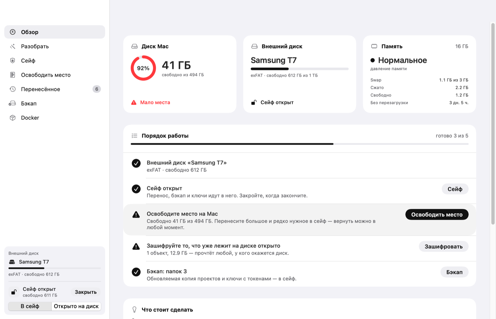
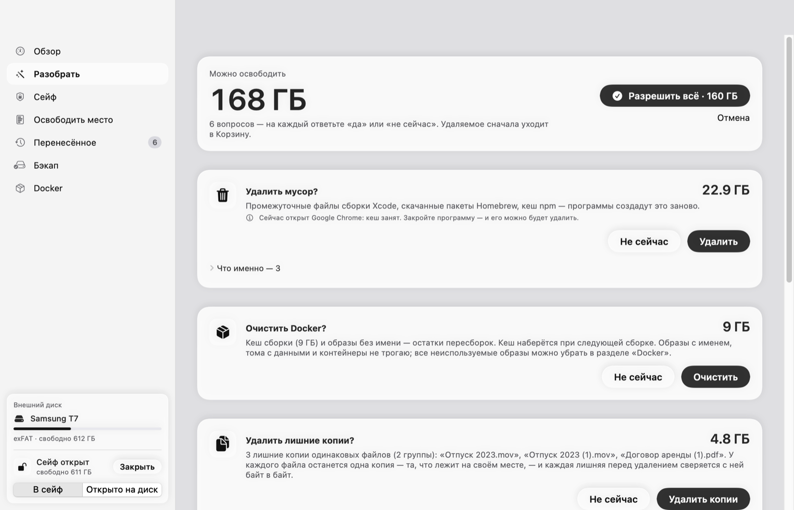

Освободите место на Mac.
Ничего не потеряв.
OffLoadAI переносит большое в зашифрованный сейф на внешнем диске, чистит кеши и Docker и делает бэкап проектов и ключей. Каждую копию он проверяет, прежде чем удалить оригинал.
Установка на Mac — одна команда в Терминале:
curl -fsSL https://raw.githubusercontent.com/audit0/Offload/main/scripts/install.sh | zsh
Бесплатно · macOS 14+ · без регистрации · открытый код (MIT)

Оригинал удаляется только после того, как копия перечитана с диска и совпала с ним байт в байт.
- Копирование в сейф или на внешний диск.
- Сверка: копия перечитывается с диска, и её SHA-256 сравнивается с оригиналом.
- Проверка, что оригинал не менялся, пока шло копирование.
- Удаление оригинала. Вернуть всё можно в любой момент, на любом Mac.
Нажать «Начать» и ответить «да» или «не сейчас»
Ходить по папкам и выбирать файлы не нужно: OffLoadAI сам раскладывает найденное по понятным вопросам и показывает, сколько места освободится.
Зашифрованный сейф
Образ AES-256 на внешнем диске. Пароль знаете только вы. Сейф сам закрывается при сне, блокировке экрана и простое.
Разбор мусора
Кеши Xcode, Homebrew, npm, pip, Cargo, Gradle, браузеров и IDE, а также старые установщики. Всё уходит в Корзину, и любой пункт можно вернуть.
Docker
Кеш сборки и образы без имени. Тома с данными не трогаются: их можно упаковать в сейф со сверкой.
Бэкап проектов и ключей
Обновляемая копия проектов без node_modules. ~/.ssh, .env, токены и ключи кладутся только в сейф.
Привычки
OffLoadAI учится на ваших ответах, только на этом Mac и без сети, и сам раскладывает похожее по нужным вопросам.
AI-помощник
Подскажет, что в папке важно, а что мусор. Работает через Claude Code, ваш ключ API или локальную модель Ollama. Удаляет только то, что разрешают правила.
Как это выглядит

Вопросы о найденном: удалить мусор, очистить Docker, удалить лишние копии.
Что OffLoadAI не даст сломать
Эти правила выросли из реальных случаев, когда простой перенос папки ломал систему.
- Виртуальные машины и медиатеки (UTM, «Фото») не переносятся, иначе приложение их потеряет.
- Данные приложений в
~/Library,~/.sshи~/.configне трогаются. - Открытые файлы не переносятся, пока приложение их держит.
- Права доступа на exFAT сохраняются рядом с архивом и возвращаются при восстановлении.
- Выход посреди копирования не оставляет на диске недокопированных скрытых папок.
- Docker: OffLoadAI следит за
Docker.rawи прерывает операцию, если тот начинает расти.
Бесплатно всё, что нужно для ваших данных
Pro никогда не встаёт между вами и вашими файлами: всё, что нужно, чтобы убрать данные в безопасное место и вернуть их обратно, бесплатно навсегда.
OffLoadAI
- Сейф: создание, смена пароля, копия заголовка
- Перенос в сейф со сверкой и возврат
- Разбор: мусор, Docker, установщики, крупное
- Ключи и токены в сейф
- Восстановление из бэкапа restic в iCloud
OffLoadAI Pro
- Всё из бесплатной версии
- Лишние копии: одинаковые файлы по SHA-256
- Привычки: похожее само попадает в нужный вопрос
- Бэкап проектов: обновляемая копия в сейф
- Тома Docker в сейф: упаковка со сверкой
14 дней Pro бесплатно с первого запуска, без ключа и регистрации. Год обновлений, продление за полцены. Один ключ на все ваши Mac и ПК. Возврат в течение 14 дней.
Оплата: Telegram Stars, СБП, криптовалюта (USDT, TON). Ключ приходит в боте сразу после оплаты.
Есть версия для Windows
Те же разделы, тексты и правила. Сейф — образ VHDX с BitLocker (нужна Windows Pro). Ключ Pro один на обе системы. Установка одной командой в PowerShell:
irm https://raw.githubusercontent.com/audit0/Offload/main/windows/scripts/install.ps1 | iex
Windows 10 или 11, x64 или ARM. Права администратора не нужны. Ставить .NET отдельно не надо.
Вопросы
Куда уходят мои файлы и данные?
Никуда. OffLoadAI работает без сети и без серверов, телеметрии нет. Ключ Pro проверяется подписью прямо на компьютере. В сеть выходят только AI-помощник, когда вы сами его спрашиваете и согласились, и проверка новых версий, если вы её включили.
macOS пишет, что не может проверить разработчика
Приложение пока не прошло нотаризацию Apple. Поставьте его командой из Терминала: тогда предупреждения не будет. Если скачали DMG, откройте «Системные настройки → Конфиденциальность и безопасность» и нажмите «Всё равно открыть».
Что будет, если я забуду пароль от сейфа?
Данные в сейфе не восстановить: пароль знаете только вы, OffLoadAI его не хранит. Храните пароль в менеджере паролей. Резервную копию заголовка сейфа OffLoadAI делает сам.
Чем это отличается от CleanMyMac?
OffLoadAI не просто удаляет, а переносит на внешний диск: в зашифрованный сейф и со сверкой каждого файла. Перенесённое возвращается одной кнопкой. Он знает подводные камни разработчика (Docker, Xcode, виртуальные машины, ключи) и работает полностью офлайн.
Нужен ли внешний диск?
Для сейфа и переноса — да, подойдёт любой: SSD, флешка или диск exFAT. Разбор мусора, кешей и Docker работает и без него.
Можно ли посмотреть код?
Да, весь код открыт на GitHub под лицензией MIT. Модель угроз и известные ограничения описаны в SECURITY.md.
Попробуйте на своём Mac
Пара минут на установку, и вы увидите, сколько места можно вернуть.